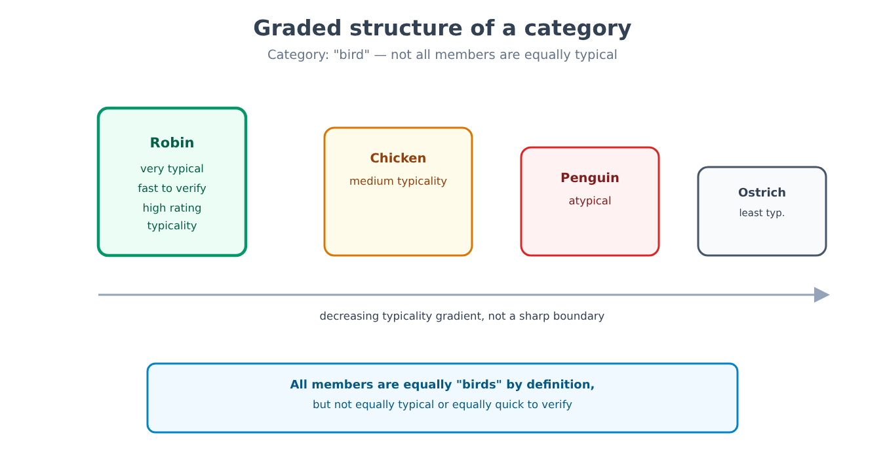
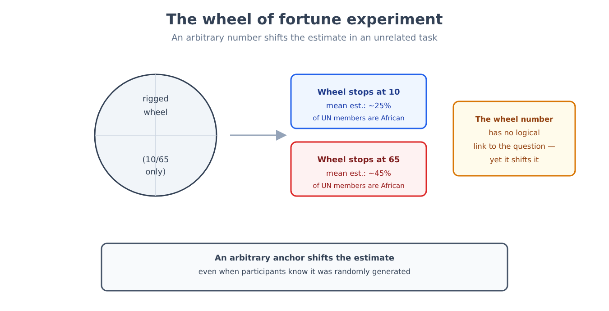
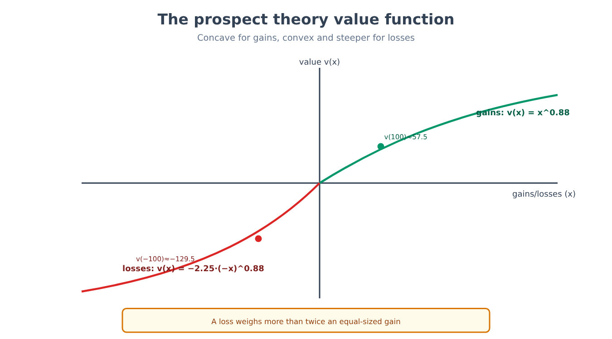
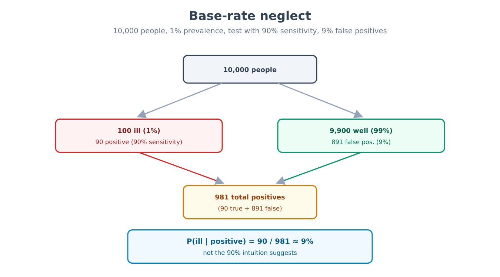
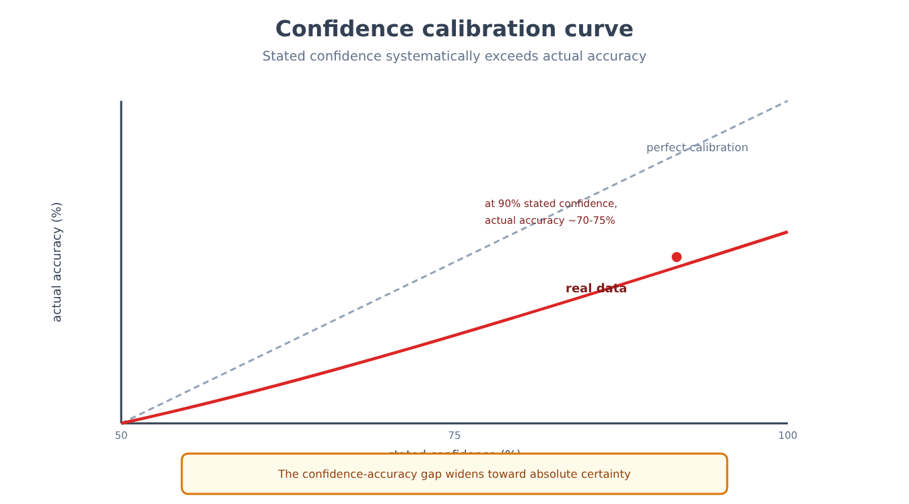
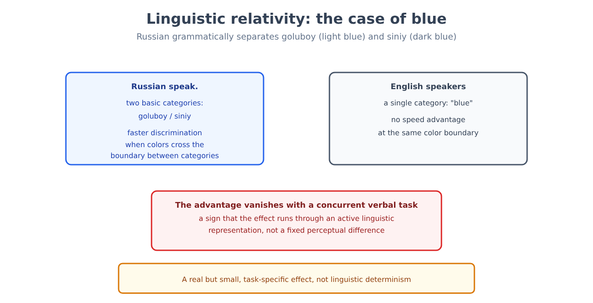

Part VII. Cognition, reasoning, systematic errors
Chapter 41 — Concepts and categories
[IN A NUTSHELL]
Recognizing that a black-and-white striped animal is a zebra requires having a concept of zebra — but what, exactly, is a concept? This chapter explains why the most intuitive attempt at an answer (a concept as a list of necessary and sufficient conditions) does not hold up against the data, and which models have replaced it.
A problem behaviorism could not even pose
Chapter 19 showed how, toward the end of the 1950s, the limits of behaviorism (its inability to account for phenomena such as language acquisition or observational learning without reference to internal representations) paved the way for the cognitive revolution: the willingness to treat the mind as an information-processing system, with internal states that are legitimate objects of scientific study, not just observable behaviors. The question "what is a concept, and how is it represented in the mind" is precisely the kind of question that behaviorism, by its very theoretical construction, forbade itself from asking: a concept is an internal state, not a behavior.
For centuries, the dominant philosophical answer to the question "what is a concept" was the classical view: a concept is defined by a set of necessary and sufficient conditions for category membership. "Bachelor" means "adult unmarried man": each condition is necessary, and their conjunction is sufficient. The problem is that, for the overwhelming majority of natural concepts used every day — "game," "bird," "furniture," "fruit" — no one has ever managed to specify a set of conditions that includes all the cases accepted as members and excludes all non-members, without exception.
Not all members of a category are equal
The first experimental clue against the classical view was the discovery that the members of a category are not treated as equivalent: some are judged to be better, more "typical" examples than others.
[THE EXPERIMENTAL DESIGN]
Participants are asked to rate, on a numerical scale, how well an item represents a given category (for example, how well "robin" represents the category "bird," compared with "penguin" or "ostrich"). Typicality judgments turn out to be remarkably consistent across different participants, not random: the robin systematically receives higher typicality ratings than the penguin. In a second task, the reaction time needed to verify statements such as "a robin is a bird" versus "a penguin is a bird" is measured: verifications involving typical members are systematically faster than those involving atypical members, even though both statements are equally true. If category membership were an all-or-nothing matter based on fixed conditions, there would be no reason for such a difference in time or judgment.
This result — attributed mainly to Eleanor Rosch's studies on typicality (experiments on typicality judgments and verification time, 1970s) — the graded structure of categories — led to prototype theory: a concept is represented not by a list of conditions, but by a prototype, a representation of the central and most typical features of the category (often a kind of statistical average of the members encountered), and the membership of a new item is judged on the basis of its similarity to that prototype, not by checking fixed conditions. An alternative model, exemplar theory, proposes that there is no abstract prototype at all: categorization would take place by comparing the new item with the memory of specific exemplars already encountered, not with a summary average. The two models make different predictions under some experimental conditions (for example, regarding sensitivity to the internal variability of the category), and current research suggests that both mechanisms may contribute, in different proportions depending on the task and on the person's experience with that specific category.

Hierarchies have a privileged level
Categories do not exist in isolation, but are organized into inclusion hierarchies: a German shepherd is a dog, which is a mammal, which is an animal. Among the possible levels, one receives privileged cognitive treatment: the basic level — "dog," not "mammal" (superordinate level, too general) nor "German shepherd" (subordinate level, too specific). The basic level is the one at which people spontaneously name an object, the one with the most shared features that are distinctive relative to neighboring categories at the same level, and the one for which it is possible to form a single, recognizable mental image (it is easy to imagine "a dog," hard to imagine "a mammal" in general, relatively easy but already more specific to imagine "a German shepherd").
[KEY POINT OF THE CHAPTER]
• The classical view of concepts (necessary and sufficient conditions) does not hold up against the data for most natural concepts, which do not admit a definition free of exceptions.
• Typicality judgments and verification times show that categories have a graded structure: some members are judged to be better examples than others.
• Prototype theory (comparison with an abstract central representation) and exemplar theory (comparison with specific cases in memory) are the two main models proposed to explain this graded structure, and both are probably partly correct.
• Category hierarchies have a cognitively privileged basic level, neither too general nor too specific.
Chapter 42 — Two ways of thinking
[IN A NUTSHELL]
An idea that has become extremely popular, even outside psychology, distinguishes two modes of mental processing: one fast and automatic, one slow and controlled. This chapter sets out what this model describes well, and why its status as a formal psychological theory — not merely as a useful descriptive metaphor — remains the subject of a debate within the discipline, one often invisible to those who encounter it in its popular version.
One label for two very different processing profiles
The model, in its most widespread formulation (Keith Stanovich and Richard West, who introduced the label "System 1/System 2" in 2000), distinguishes System 1, a fast, automatic form of processing that requires little or no deliberate cognitive effort and whose mechanisms are often inaccessible to introspection (reading a written word in one's own language, recognizing a familiar face, feeling an immediate emotion in front of an image), from System 2, a slow, deliberate form of processing that requires attention and limited resources, and that can be interrupted if those resources are engaged elsewhere (solving an equation, evaluating a complex argument, choosing between two options with many variables at play). The model connects directly to the distinction between automatic and controlled processing already encountered in chapters 30 and 31 in relation to attention and automaticity: System 1 operates with a minimal attentional load, while System 2 requires the same limited attentional resources described in that chapter, and is therefore vulnerable to being overwhelmed when those resources are engaged elsewhere.
The model has considerable descriptive and explanatory power for organizing otherwise scattered phenomena: many of the heuristics discussed in chapter 43, for example, are described as typical products of System 1 — fast responses, often correct, but systematically biased in situations deliberately constructed to isolate their limits.
A useful model is not automatically a correct theory
[CONTROVERSIAL QUESTION]
Within cognitive psychology, a sizable group of researchers has raised serious objections to the theoretical status of the dual-system model, distinguishing its usefulness as a descriptive metaphor (grouping phenomena with similar properties under two convenient labels) from its validity as an explanatory theory with a specific, unified brain mechanism. The main objections include: the absence of a sharp, measurable boundary between the two systems (many tasks show intermediate gradations of automaticity, not a clean dichotomy); the fact that "System 1" and "System 2" group under the same label processes with very different neural bases and computational properties (the automaticity of recognizing a face and that of a conditioned reflex have little in common in terms of the mechanisms involved); and the risk that the label itself becomes an apparent explanation ("he got it wrong because he used System 1") that masks the absence of a specified causal mechanism. Supporters of the model reply that no psychological theory at this level of generality avoids internal gradations, and that its ability to generate empirically verified predictions (for example, predicting which experimental conditions increase or reduce a systematic error) is nonetheless a sign of scientific validity, regardless of whether the "two systems" correspond to two sharply separate neural structures. The debate remains open: the model is widely used as a teaching tool and as a research heuristic, with growing caution, in academic circles, against treating it as the discovery of two distinct, localizable brain mechanisms.
This distinction between descriptive usefulness and mechanistic validity connects directly to the comparison between attentive and automatic processing in chapter 31: some of the same experimental results can be described equally well in the language of selective attention or in that of the two systems, a sign that the two conceptual frameworks overlap more than their independent origins would suggest.
[KEY POINT OF THE CHAPTER]
• The dual-system model distinguishes fast, automatic processing (System 1) from slow, controlled processing (System 2), connecting directly to the distinction between automatic processing and controlled attention in chapter 31.
• The model has strong descriptive power for organizing phenomena such as the heuristics of chapter 43, but its status as a theory of mechanism (not just a useful metaphor) is the subject of a debate within the discipline.
• The main objections concern the absence of a sharp boundary between the two systems and the risk that the label serves as an apparent explanation without specifying a causal mechanism.
Chapter 43 — Heuristics
[IN A NUTSHELL]
Faced with an uncertain judgment, the mind almost never calculates a formal probability: it relies on quick shortcuts, called heuristics, that work well in most everyday situations but can produce systematic, predictable errors under conditions deliberately constructed to isolate them. This chapter presents three of the best-documented heuristics, the original experimental designs that isolated them, and the counterpoint of those who regard them not as errors but as rational adaptations to one's environment.
Availability: judging frequency by ease of recall
The availability heuristic consists in estimating the frequency or probability of an event on the basis of how easily examples of that event come to mind — a reasonable shortcut, because in many real situations the most frequent events are also the easiest to remember, but a systematically misleading one when ease of recall depends on factors other than actual frequency (for example, how recent, vivid, or covered by the media an event has been).
[THE EXPERIMENTAL DESIGN]
In a classic study by Amos Tversky and Daniel Kahneman (1973), participants are asked to estimate whether, in a typical English text, it is more common for a word to begin with the letter "K" or to have "K" as its third letter. The great majority answer that words beginning with K are more frequent — whereas in reality the opposite is true: K is more common as the third letter. The proposed explanation is that it is much easier to retrieve from memory words organized by initial letter (a task the retrieval system does well) than by a letter in an intermediate position: ease of retrieval, not actual frequency, drives the judgment.
Representativeness: judging probability by similarity to a stereotype
The representativeness heuristic consists in estimating the probability that an item belongs to a category on the basis of how closely it resembles the typical stereotype of that category, ignoring relevant statistical information such as the base rate of the category in the population.
[THE EXPERIMENTAL DESIGN]
In the classic example, taken from Tversky and Kahneman (1974) and based on the 1973 line of research on prediction problems (in which professions ranked by probability turned out to be ranked the same way as when they were ranked by similarity to the stereotype), participants are given a short description of a person ("Steve is very shy and withdrawn, invariably helpful, but with little interest in people or in the world of reality; a meek and tidy soul, he has a need for order and structure, and a passion for detail"), and are asked to estimate how likely it is that Steve works in various professions, including librarian and farmer. The typical judgment considers "librarian" more likely than "farmer," even though in the United States farmers are a far larger occupational group than librarians: the description resembles the stereotype of the librarian more than that of the farmer, and this similarity dominates the judgment, overriding the information on the base rate of the two professions — a phenomenon that chapter 45 will take up in its more formalized form, base rate neglect.
Anchoring: an irrelevant number that shifts the final estimate
The anchoring and adjustment heuristic consists in producing a final estimate by starting from an initial value (the anchor) and adjusting it insufficiently, even when the anchor is clearly arbitrary and unrelated to the quantity being estimated.
[THE EXPERIMENTAL DESIGN]
In Tversky and Kahneman's original experiment (1974), participants are shown a wheel of fortune rigged to stop on only two numbers, 10 or 65 (the participants do not know this). After seeing the number on which the wheel has stopped, they are asked to estimate the percentage of African countries that are members of the United Nations — a task with no logical relation to the number on the wheel. Participants who had seen the wheel stop on 65 give systematically higher average estimates than those who had seen it stop on 10, even though both groups knew perfectly well that the wheel's number was randomly generated and carried no information useful for the task.

Systematic errors or rational adaptations?
[CONTROVERSIAL QUESTION]
The research program that isolated these heuristics (often called "heuristics and biases") presents them primarily as sources of systematic error relative to a norm of formal rationality (probability calculus, decision theory). An alternative position, developed above all from the 1990s onward, holds that labeling these results as "errors" applies a standard of rationality that is abstract and often irrelevant to the real environment in which the judgment must be made: in everyday life, information is incomplete, the time available to decide is limited, and heuristics are ecologically rational shortcuts, calibrated to real statistical environments in which they produce, in the great majority of cases, a good outcome at a far lower computational cost than a complete formal calculation — a favorable trade-off, not a cognitive defect. Supporters of the first position reply that the existence of specific, reproducible experimental conditions in which the heuristic produces a systematic error, predictable in advance, remains a solid finding regardless of how it is interpreted: that the heuristic is useful in most everyday cases does not imply that its failure, when it occurs, is not real, systematic and sometimes consequential (for example in medical, financial or judicial decisions). Both positions agree on the basic experimental data; the disagreement concerns the normative interpretation of what counts as an "error."
[KEY POINT OF THE CHAPTER]
• The availability heuristic estimates frequency on the basis of ease of recall, not actual frequency, as the experiment on words beginning with K shows.
• The representativeness heuristic estimates probability on the basis of similarity to a stereotype, ignoring the base rate, as the experiment on Steve the librarian shows.
• The anchoring heuristic shows that a final numerical estimate is systematically influenced by an arbitrary starting value, even when the person knows it is irrelevant.
• The debate between those who regard these heuristics as systematic errors relative to a norm of formal rationality and those who regard them as ecologically rational adaptations to a real environment remains open, though it rests on a shared base of experimental data.
Chapter 44 — Decision under risk
[IN A NUTSHELL]
Classical economic theory describes a rational decision as choosing the option with the highest expected value. Real people, with remarkable regularity, do not decide this way. This chapter presents the model that best describes how people actually decide under conditions of risk, with its formulas and numerical examples.
The normative model and its systematic violations
The classical expected utility model prescribes that, among risky options, a rational person should choose the one with the highest expected value (the probability of each outcome multiplied by its value, summed over all possible outcomes). The systematic violations of this model, observed repeatedly in the laboratory, led to the development of an alternative descriptive model, prospect theory, which does not prescribe how one ought to decide but describes how people actually decide.
Formulated by Daniel Kahneman and Amos Tversky (1979) and refined in the cumulative version of 1992, from which come the power form and the typical estimates used below, prospect theory has as its first element the fact that outcomes are not evaluated in absolute terms of final wealth, but as gains or losses relative to a reference point (typically the current state). The second element is the shape of the value function, which links the subjective value of an outcome to its objective magnitude.
[FORMULA]
The value function of prospect theory has a shape that can be approximated, separately for gains and for losses, as:
v(x) = x^α for x ≥ 0 (gains)
v(x) = −λ · (−x)^β for x < 0 (losses)
Where:
• x is the magnitude of the gain or loss relative to the reference point.
• v(x) is the subjective value assigned to that gain or loss.
• α and β are exponents smaller than 1 (typical estimates around 0.88), which make the function concave for gains and convex for losses: the subjective difference between gaining 100 and 200 euros is perceived as greater than the difference between gaining 1100 and 1200 euros, and the same holds, symmetrically, for losses.
• λ is the coefficient of loss aversion, typically estimated at around 2 (with values between 1.5 and 2.5 depending on the study): a loss has a negative subjective impact of greater magnitude than the subjective pleasure of a gain of the same absolute size.
Worked example. With α = β = 0.88 and λ = 2.25, a gain of 100 euros produces a subjective value v(100) = 100^0.88 ≈ 57.5. A loss of 100 euros produces a subjective value v(−100) = −2.25 · 100^0.88 ≈ −129.5. In absolute value, the loss (129.5) weighs more than twice as much as the gain of the same size (57.5): this is exactly why most people turn down an even-odds double-or-nothing bet (50% chance of winning 100 euros, 50% chance of losing 100), even though its expected value in monetary terms is zero — in terms of subjective value according to this model, the expected value of the bet is negative: 0.5 · 57.5 + 0.5 · (−129.5) ≈ −36.0 (in simplified form, with undistorted probabilities; the full theory uses decision weights that change the result only slightly, without changing the conclusion).

[NUMBERS]
The loss aversion coefficient estimated in laboratory studies typically falls between 1.5 and 2.5, with a central estimate of around 2: losing a sum of money produces, on average, a subjective displeasure roughly twice as great as the pleasure produced by gaining the same sum. This value is not universal: it varies with context (financial, health, or time decisions), with the size of the stakes, and across individuals.
Framing the same choice changes the decision
A second element of prospect theory concerns the probability weighting function: people do not treat objective probabilities linearly, but tend to overweight small probabilities (for example in the disproportionate appeal of lotteries, where the probability of winning is minimal) and to underweight medium-to-high probabilities relative to certainty.
A practical consequence, distinct from the heuristics of chapter 43 but closely related to them (44 → 43, prospect theory and the heuristics share the experimental setup of comparing choices that are formally equivalent but psychologically different), is the framing effect: the same choice, formally identical in terms of possible outcomes, produces systematically different decisions depending on how it is described.
[THE EXPERIMENTAL DESIGN]
In Tversky and Kahneman's famous study on framing (1981), participants are presented with a decision problem identical in substance but described in two ways: in one version, a program to combat a disease threatening 600 people is described as able to "save 200 people" with certainty, or as having "a one-third probability of saving all 600 people and a two-thirds probability of saving no one" (framing in terms of gains). In the other version, mathematically identical, the same options are described as "400 people will die" with certainty, or "a one-third probability that nobody will die and a two-thirds probability that all 600 will die" (framing in terms of losses). When the options are framed as gains, the majority of participants choose the certain option (risk aversion in the domain of gains); when the very same options are framed as losses, the majority choose the risky option (risk seeking in the domain of losses) — a preference reversal determined solely by the verbal formulation, not by the numbers, which violates a fundamental principle of rational decision theory (invariance with respect to description).
[KEY POINT OF THE CHAPTER]
• Prospect theory describes how people actually decide under conditions of risk, in contrast to the normative model of expected utility.
• The value function is concave for gains and convex for losses, with a loss aversion coefficient typically around 2: losses weigh more than gains of the same size.
• The subjective weighting of probabilities is not linear: small probabilities are overweighted, medium-to-high ones underweighted relative to certainty.
• The framing effect shows that the same choice, formally identical, produces opposite decisions depending on whether it is described in terms of gains or of losses — a direct violation of the descriptive invariance required by rational decision theory.
Chapter 45 — Probability and formal reasoning
[IN A NUTSHELL]
Beyond the general heuristics of chapter 43, there are specific errors of probabilistic and logical reasoning that can be isolated with mathematical precision. This chapter presents the best documented of them — the conjunction fallacy, base rate neglect, the gambler's fallacy, conditional reasoning — with, for base rate neglect, the full Bayesian calculation that most people do not carry out correctly.
A conjunction can never be more probable than its parts
The conjunction fallacy consists in judging the conjunction of two events ("A and B") to be more probable than one of the two events taken alone ("A") — an elementary violation of the axioms of probability, because the set of cases in which both A and B are true can never be larger than the set of cases in which A alone is true.
[THE EXPERIMENTAL DESIGN]
In the study by Tversky and Kahneman (1983) that isolated the fallacy, participants are presented with a description of an imaginary person, Linda, deliberately constructed to suggest progressive political and social engagement ("thirty-one years old, single, outspoken and very bright; majored in philosophy; as a student, deeply concerned with issues of discrimination and social justice, she also took part in anti-nuclear demonstrations"). They are then asked which of two statements is more probable: "Linda is a bank teller" or "Linda is a bank teller and is active in the feminist movement." The great majority of participants — including many with training in statistics — judge the second statement more probable than the first, even though this is logically impossible: every person who satisfies the conjunction (is a bank teller AND is active in the feminist movement) automatically also satisfies the first condition (is a bank teller) on its own. The proposed explanation is, once again, the representativeness heuristic: the conjunction "describes" Linda in a way more consistent with the stereotype suggested by the text, and this narrative coherence dominates the judgment over the logical structure of probability.
Ignoring how rare something is to begin with
Base rate neglect consists in ignoring, or drastically underweighting, information about the general frequency of an event in the population when more specific and vivid information about the individual case is available — even when the base rate should, from the standpoint of probability calculus, dominate the final judgment.
[THE EXPERIMENTAL DESIGN]
In the original study (Casscells, Schoenberger and Grayboys, 1978), 60 people at a medical school — 20 physicians, 20 residents and 20 fourth-year students — were given this problem: a disease affects 1 person in 1,000, the test has a false-positive rate of 5% (and was assumed to detect everyone who has the disease); a person tests positive — what is the probability that they have the disease? The most common answer was 95% (27 people out of 60); only 11 out of 60 gave the correct answer, around 2%. To show the calculation with more convenient numbers, we use here an example constructed for this book, with the same structure: the disease affects 1% of the population; the test has a sensitivity of 90% (it correctly detects 90% of those who are ill) and a specificity of 91% (it gives a correct negative result in 91% of healthy people, hence a false-positive rate of 9%). A person tests positive. The typical, intuitive error leads to an estimate of around 90% (confusing the sensitivity of the test with the probability of disease given a positive result). The correct calculation, using Bayes' theorem, gives a very different result.
[FORMULA]
Bayes' theorem makes it possible to calculate the correct probability:
P(M|+) = [P(+|M) · P(M)] / [P(+|M) · P(M) + P(+|¬M) · P(¬M)]
Where:
• P(M|+) is the probability of having the disease, given a positive test result (what we want to calculate).
• P(+|M) is the sensitivity of the test, the probability of a positive result given that one has the disease (0.90).
• P(M) is the base rate of the disease in the population (0.01).
• P(+|¬M) is the false-positive rate, the probability of a positive result given that one does not have the disease (1 − specificity = 0.09).
• P(¬M) is the probability of not having the disease (1 − 0.01 = 0.99).
Worked example. In a hypothetical population of 10,000 people: 100 have the disease (1%), of whom the test correctly detects 90 (sensitivity 90%). Of the 9,900 healthy people, 9% (891 people) nonetheless test positive by mistake (false positives). The total number of positive tests is therefore 90 + 891 = 981. Of these 981 positives, only 90 actually have the disease:
P(M|+) = 90 / 981 ≈ 0.092
The actual probability of having the disease given a positive test is about 9%, not the 90% that intuition suggests — almost ten times lower. The reason is that, because the disease is rare, the absolute number of false positives generated by a much larger healthy population far exceeds the number of true positives generated by the small ill population, even with a fairly accurate test. Ignoring the base rate of the disease (the initial 1%) leads to a drastic overestimate of the actual probability.

Chance and memory
The gambler's fallacy consists in believing that, after a series of independent outcomes of the same kind (for example several consecutive coin tosses coming up heads), the opposite outcome (tails) becomes more likely "to make up for it" — whereas statistically independent events have no memory: the probability of each toss remains unchanged, regardless of the history of previous tosses.
Finally, conditional reasoning, the ability to reason correctly about statements of the form "if P then Q," shows systematic difficulties, documented by the selection task devised by Peter Wason (1968), in which participants must decide which of four cards presented to them need to be turned over to test a conditional rule. Most participants select cards that would confirm the rule if it were already true, systematically neglecting the card whose inspection could instead falsify it — a pattern consistent with a more general tendency, distinct from errors of probabilistic calculation, to seek confirmation rather than potential disconfirmation of a given hypothesis.
[KEY POINT OF THE CHAPTER]
• The conjunction fallacy shows that a conjunction of events can be judged more probable than one of its components taken alone, an elementary violation of the logic of probability, driven by the narrative coherence of the stereotype (representativeness).
• Base rate neglect leads to a drastic overestimate of the probability of a rare event given a positive signal, as the full Bayesian calculation for the diagnostic test shows (about 9%, not 90%).
• The gambler's fallacy wrongly attributes a "memory" to statistically independent events.
• Difficulties in conditional reasoning reveal a systematic tendency to seek confirmation rather than potential disconfirmation of a given rule.
Chapter 46 — Metacognition and confidence
[IN A NUTSHELL]
Knowing that one knows — and knowing that one does not know — is an ability distinct from knowledge itself, and not always well calibrated. This chapter explains why subjective confidence in one's own knowledge and judgments systematically tends to exceed actual accuracy, why our understanding of how things work is shallower than it seems from the inside, and how the memory of a lived experience can differ systematically from the experience itself as it was being lived.
Confidence systematically exceeds accuracy
Metacognition is the knowledge and control of one's own cognitive processes: knowing how well prepared one is for an exam before taking it, noticing that one has not understood a text while reading it, estimating how far one's own memory can be trusted. A well-documented phenomenon in this area is overconfidence: the average subjective confidence reported for a set of judgments systematically exceeds the proportion of those judgments that are actually correct.
[THE EXPERIMENTAL DESIGN]
In the calibration studies conducted from the 1970s onward by Sarah Lichtenstein, Baruch Fischhoff and Lawrence Phillips, participants are asked to answer a series of multiple-choice factual questions (for example general-knowledge items) and, for each answer, to indicate how sure they are that they answered correctly, on a percentage scale. By aggregating the answers by band of stated confidence, a calibration curve is constructed: if confidence were perfectly calibrated, then among all the answers for which participants stated "90% certainty," exactly 90% should actually be correct. In practice, among answers given with a stated confidence of 90%, the proportion actually correct typically stands at around 70-75%: subjective confidence systematically exceeds actual accuracy, with a gap that tends to grow the closer the stated confidence comes to absolute certainty.

A related but distinct phenomenon is the illusion of explanatory depth: people tend to overestimate how well they understand the workings of everyday objects and systems (a zipper, a flush toilet, a bicycle), until they are asked to explain the mechanism step by step.
[THE EXPERIMENTAL DESIGN]
In the study by Leonid Rozenblit and Frank Keil (2002) that isolated the phenomenon, participants are asked to rate, on a numerical scale, how well they understand how an everyday object works. They are then asked to write a detailed, step-by-step explanation of how the object works. After attempting the explanation, participants are asked to re-rate their understanding on the same initial scale. Systematically, the second rating turns out lower than the first: the mere attempt to articulate the mechanism explicitly reveals gaps that the subjective feeling of understanding, before the attempt, did not allow them to perceive. The feeling of understanding and the ability to explain thus turn out to be less correlated than one would expect.
The self that lives an experience and the self that remembers it are not the same
Chapter 33 introduced, in connection with the perception of duration, the distinction between how an experience is lived moment by moment and how it is later remembered — explicitly referring to this chapter for the main treatment. The experiencing self evaluates an experience instant by instant, while the remembering self constructs, after the fact, an overall evaluation of the experience — and the two evaluations can diverge systematically, with direct practical consequences for which experiences people choose to repeat.
[THE EXPERIMENTAL DESIGN]
In the "cold-pressor" experiment conducted by Daniel Kahneman, Barbara Fredrickson, Charles Schreiber and Donald Redelmeier (1993), participants are asked to immerse a hand in painfully cold water under two distinct conditions. In the "short" condition, the hand stays immersed for 60 seconds at a constant, unpleasant temperature. In the "long" condition, the hand stays immersed for the same initial 60 seconds at the same temperature, followed by another 30 seconds during which the water is slightly and gradually warmed (still unpleasant, but less so than in the initial phase) — an experience that is longer overall and involves a greater, not smaller, total amount of discomfort. When participants are asked which of the two experiences they would prefer to repeat, the majority choose the "long" condition, even though it objectively involves more total time of discomfort. The memory of the experience turns out to be disproportionately dominated by two moments: the peak of discomfort (the same in both conditions) and the final moment (better in the long condition, which ends with a slight improvement) — a regularity known as the peak-end rule, which causes the overall memory to depart systematically from the actual sum of the discomfort felt instant by instant.
This distinction will play a direct role in the discussion of personal identity over time, to which this chapter refers (46 → 82): if the judgment of "how well" one's life has gone depends disproportionately on a few salient moments and on the ending, rather than on a faithful sum of every moment lived, the question of which of the two selves — the one that lives or the one that remembers — should have the last word in practical decisions has no obvious answer.
[KEY POINT OF THE CHAPTER]
• Subjective confidence in one's own judgments systematically exceeds actual accuracy, as calibration curves on factual questions show.
• The illusion of explanatory depth shows that the feeling of understanding a mechanism drops sharply as soon as one tries to explain it explicitly step by step.
• The self that lives an experience instant by instant and the self that remembers it after the fact can evaluate the same experience in systematically different ways, with the memory dominated by the peak and the final moment (the peak-end rule), as anticipated in chapter 33.
• This distinction will be taken up again in chapter 82 in connection with personal identity over time.
Chapter 47 — Language and thought
[IN A NUTSHELL]
Does the language one speaks shape the way one thinks, or is it merely a neutral vehicle for expressing thoughts that would exist in the same form anyway? This chapter sets out what the data actually show on this question, after decades in which the popular answer has often gone far beyond what research has actually established.
How a language is acquired
Language acquisition in children follows a remarkably regular sequence of stages across very different languages and cultures: babbling (the production of syllable-like sounds, regardless of the language the child is exposed to) between six and ten months, first single words around twelve months, a vocabulary explosion and the first two-word combinations around eighteen to twenty-four months, and a substantial mastery of the basic grammar of the native language by four to five years — a speed and regularity that have fueled a decades-long debate over how far this ability is supported by language-specific mechanisms present from birth, rather than deriving entirely from general learning mechanisms applied to a rich linguistic input. The debate over the extent to which there exists an innate universal grammar, common to all human languages, remains open and highly technical; what is less controversial is that children extract statistical and structural regularities from the language they are exposed to with remarkable efficiency, long before they can express them explicitly.
Does the language one speaks influence how one thinks?
The hypothesis of linguistic relativity, often associated with the names of Edward Sapir and Benjamin Lee Whorf (first half of the twentieth century), proposes that the grammatical and lexical structure of a language influences the way its speakers perceive and categorize the world. In its strongest form — often called linguistic determinism — the hypothesis would hold that thought is entirely constrained by, if not actually made impossible outside of, the categories available in one's own language; this strong version is today considered discredited by the great majority of researchers, given the overwhelming evidence that people can perceive, remember and reason about distinctions for which their own language has no dedicated word.
A weaker and better empirically supported version proposes instead that linguistic categories influence, without rigidly determining it, the way attention is allocated and information is processed in specific tasks.
[THE EXPERIMENTAL DESIGN]
In the study by Jonathan Winawer and colleagues (2007): Russian, unlike English, has two distinct, non-interchangeable words for light blue and dark blue (goluboy and siniy), treated grammatically as separate basic colors, in the same way that Italian treats red and orange as separate (Italian too, with blu and azzurro, is a debated case). In a rapid visual discrimination task, Russian and English speakers are asked to determine as quickly as possible which of two colored squares placed below matches a reference square placed above. When the two colors to be compared cross the goluboy/siniy category boundary (for a Russian speaker), Russian speakers are systematically faster at discrimination than when the two colors remain within the same category — an advantage that English speakers, who lack this grammaticalized distinction, do not show to the same extent. The advantage also disappears if Russian speakers are required to perform simultaneously a verbal task that engages the same linguistic resources used to categorize the color — an indication that the effect actually passes through an active linguistic representation, not through a basic perceptual difference fixed permanently.

A second line of research has shown analogous effects in the spatial domain: linguistic communities whose language has no terms for "left" and "right" relative to the speaker's body, but only absolute terms based on the cardinal directions (equivalent to "north," "south," "east," "west," used also to describe, for example, the position of an object on a table), develop a remarkable ability for constant absolute orientation, maintaining a precise sense of the cardinal directions even in enclosed or unfamiliar environments — an ability that speakers of languages with egocentric terms (left/right) typically do not develop to the same level.
[CONTROVERSIAL QUESTION]
Even accepting these results as solid (both have been replicated with different methods), their significance remains a matter of disagreement. One position interprets them as evidence that language, having measurable effects on non-linguistic perceptual and cognitive tasks, plays a genuine, if modest, causal role in shaping cognition — not in the strong sense of discredited determinism, but in the sense that the language habitually spoken is one of the factors, along with many others, that shape information processing. A more cautious position stresses that these effects are typically small in absolute terms, measurable only in very specific and sensitive laboratory tasks (differences on the order of a tenth of a second in a reaction time), and easily eliminated by a concurrent task that engages linguistic resources — suggesting that language provides an additional cognitive tool, available and at times used to make a task more efficient, but not that it reshapes the basic perceptual or conceptual structure shared by all human beings regardless of the language they speak.
[KEY POINT OF THE CHAPTER]
• Language acquisition follows remarkably regular stages across different languages and cultures, fueling a technical, still open debate on the relative weight of innate language-specific mechanisms and of general learning from a rich input.
• The strong version of linguistic relativity (linguistic determinism) is today discredited; a weaker version, in which language influences cognition without rigidly determining it, is supported by experiments on color categories and on spatial orientation.
• The measured effects are typically small, task-specific, and reducible by concurrent verbal interference — an indication that language provides an additional cognitive tool, not a rigid constraint on basic perception or thought.